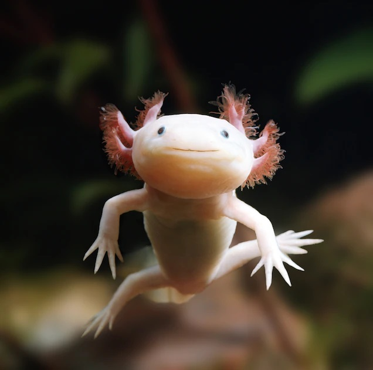
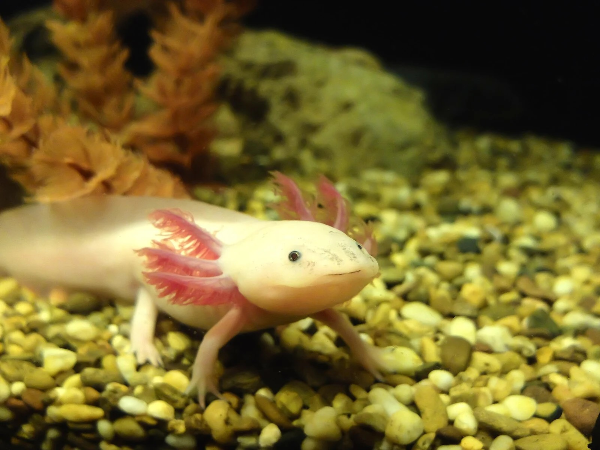
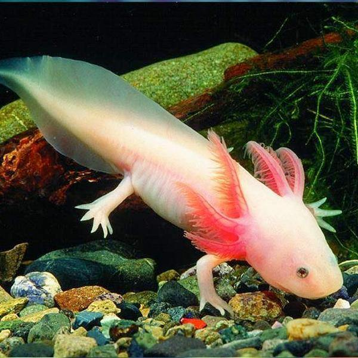

The axolotl , Ambystoma mexicanum, is a paedomorphic salamander related to the tiger salamander. The species was originally found in several lakes, such as Lake Xochimilco underlying Mexico City. Axolotls are unusual among amphibians in that they reach adulthood without undergoing metamorphosis. Instead of taking to the land, adults remain aquatic and gilled.
Axolotls should not be confused with the larval stage of closely related tiger salamander species (A. tigrinum), which are widespread in much of North America and occasionally become paedomorphic. Neither should they be confused with mudpuppies (Necturus spp.), fully aquatic salamanders from a different family that are not closely related to the axolotl but bear a superficial resemblance.
As of 2020, wild axolotls were near extinction due to urbanization in Mexico City and consequent water pollution, as well as the introduction of invasive species such as tilapia and perch. They are listed as critically endangered in the wild, with a decreasing population of around 50 to 1000 adult individuals, by the International Union for Conservation of Nature and Natural Resources (IUCN) and are listed under Appendix II of the Convention on International Trade in Endangered Species (CITES). Axolotls are used extensively in scientific research due to their ability to regenerate limbs, gills and parts of their eyes and brains. Axolotls were also sold as food in Mexican markets and were a staple in the Aztec diet.
